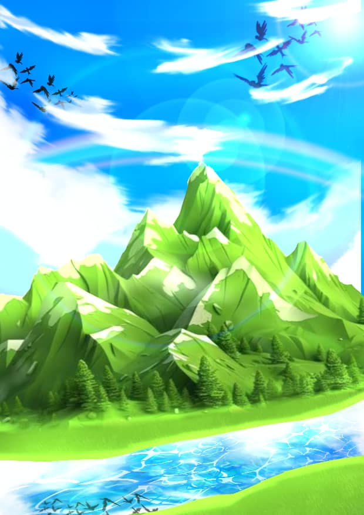
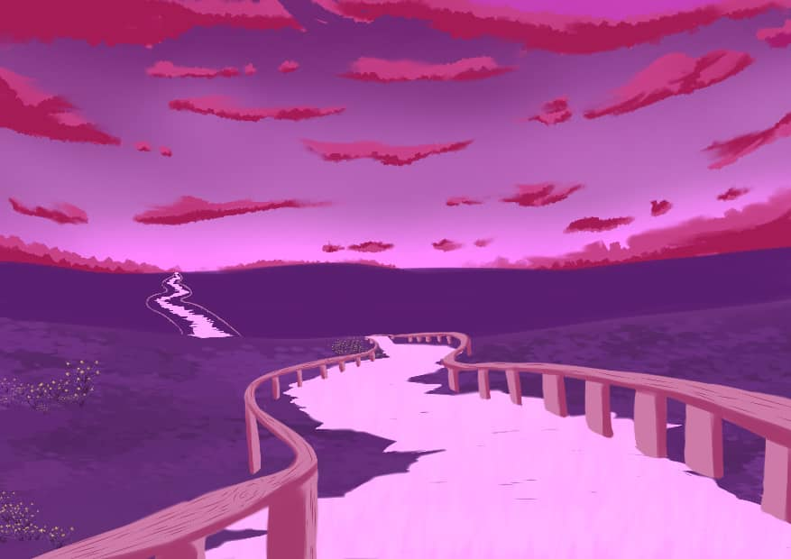
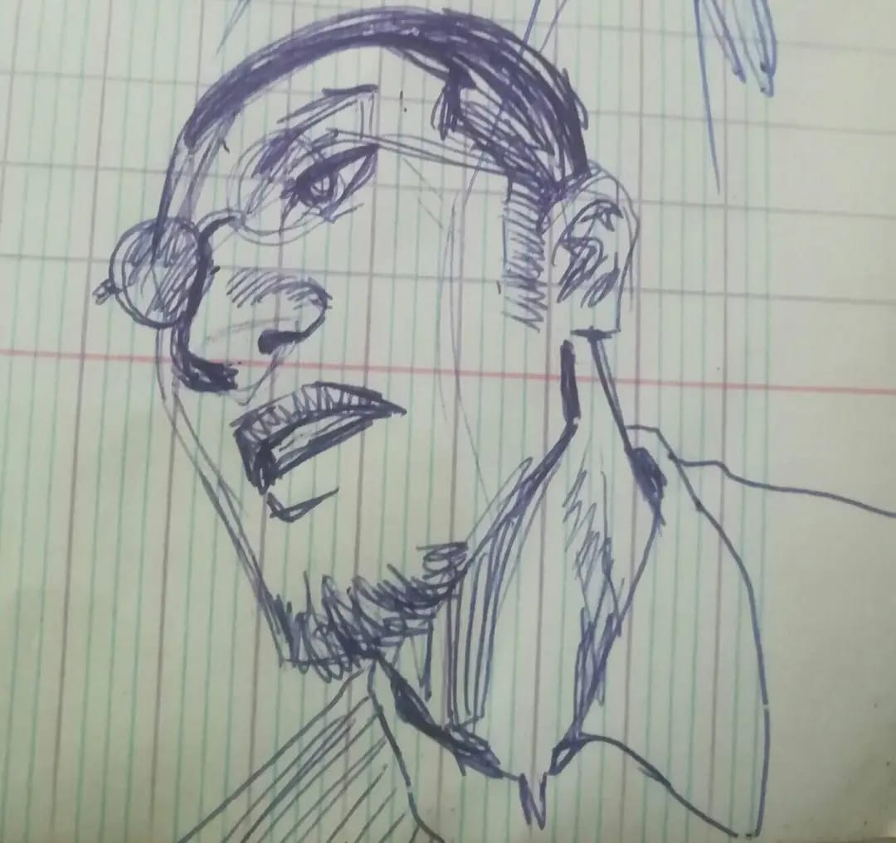
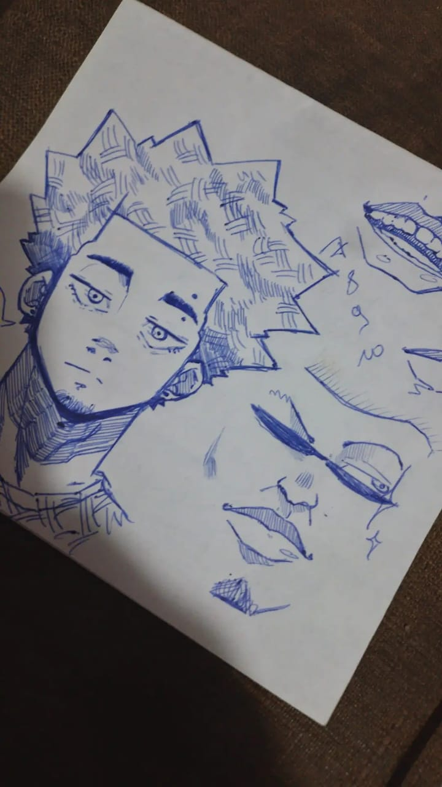
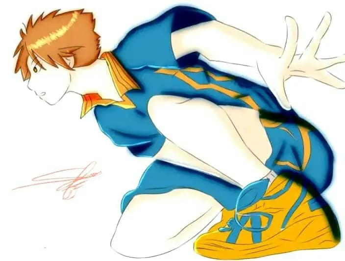

Mon univers graphique
Depuis toujours, dessiner est ma façon d’écouter le monde. Mes dessins naissent de petites observations — un visage dans la rue, un souvenir d’enfance, une scène rêvée — puis se transforment en compositions où la ligne et le geste prennent le pas sur la précision. J’explore différentes techniques (crayon, encre, hachures, lavis) pour exprimer des ambiances : intimité, mélancolie, humour ou énergie brute.
Mon travail se situe entre réalisme et stylisation : j’accorde autant d’importance au sujet qu’à la manière dont il est rendu. Cette galerie présente des séries et des pièces uniques, accompagnées parfois d’esquisses et d’études préparatoires. Si un dessin vous parle et que vous voulez en savoir plus (tirage, encadrement, commande), n’hésitez pas à me contacter — j’aime collaborer et créer sur mesure.





Pour plus de contenu
Retrouvez davantage de mes créations sur ma page Facebook : 👉 Cliquez ici